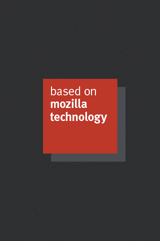
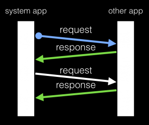

5月282014 seinlin 使用不同的檔案系統，Firefox OS 主程式沒跑起來！  前陣子收到一隻手機，需要把 Firefox OS porting 上去。剛好之前有看過這幾篇文章 B2G Porting, 三步驟 build 好 Firefox OS及透過 AOSP build system 來 build Firefox OS，不然還真不知道從那裡開始。先費了一翻功夫把 man...
5月262014 Jamin Liu 淺談 Cycle Collection 什麼是 Cycle Collection ？ Gecko 專案中，常常會使用 smart pointer 來管理動態配置的記憶體的釋放。當記憶體的 reference count 為零時，就判定為不會再被使用。然而如果物件互相持有，形成了 reference cycle，也就是謀智台客這篇「說說 n...
5月192014 阿帆達 Avatar Address-Sanitizer(ASAN): 一個 C/C++ 記憶體偵錯的工具 LLVM 有一系列以 Sanitizer 結尾的偵錯工具(ASAN/TSAN/MSAN/DFSAN/LSAN)[[1]](https://clang.llvm.org/docs/)，每個工具各司其職，在此我們介紹其中的 ASAN[[2]](https://code.google.com/p/addr...
5月122014 Harly Hsu Mozilla UX Team大解密 在 Mozilla 眾多的團隊中，有一個神秘的 UX Team ，很多人都很好奇到底這些人在做什麼? 整天都在會議室嘻嘻哈哈的討論工作，感覺很快樂。今天就來為大家解密，介紹一下 Mozilla 的 UX Team 。 首先，先跟大家解釋一下什麼是 UX ： UX（User Experience）就字...
5月52014 Tzu-Lin Huang 再探 Inter-App Communication (IAC)  先前 EragonJ 跟大家介紹過 Inter App Communication 的使用情境以及使用範例程式碼，本篇將繼續討論 InterApp Communcation（文章後面將縮寫為 IAC ）其他較少為人知的面向。 雙向通訊連線 使用 IAC 建立連線的程式碼通常如下： navigator...